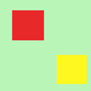
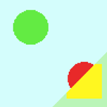
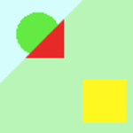

O mapa de profundidade é um filtro de combinação que é muito útil para combinar duas figuras diferentes ou camadas. Você pode decidir qual parte de cada imagem ou camada continuará visível.

Cada imagem é associada com um mapa que funciona como uma máscara. Simplesmente crie este mapa como um degradê de escalas-de-cinza: quando aplicado na imagem, áreas escuras da máscara irão mostrar a imagem subjacente e as áreas claras irão mascarar a imagem.
![[Nota]](images/note.png)
|
Nota |
|---|---|
|
Para trabalhar com este filtro, as imagens e os mapas precisam ter o mesmo tamanho. Todas as imagens a serem selecionadas precisam estar presentes na tela. Você também pode usar este filtro em uma imagem com diversas camadas. Todas as camadas irão aparecer na lista seleção usada para selecionar as imagens. Essas camadas precisão ter o mesmo tamanho. If the image is in indexed mode, this menu entry is disabled. |

- Origem 1, Origem 2
-
Define a fonte das imagens que serão usadas para a junção.
- Depth map 1, Depth map 2
-
Define the pictures to use as transformation maps for the sources.
- Sobreposição
-
Cria transições suaves entre as imagens.
- Deslocamento
-
Essa opção altera o limite de mistura, dando mais ou menos importância a uma imagem em relação à outra.
- Escala 1, Escala 2
-
O mesmo que acima para o deslocamento, mas mais sensível e aplicado para cada mapa separadamente. Quando você usa uma escala com valores baixos, isso irá afetar o valor de mapa de imagem, tornando-o mais escuro. Logo, preto será mais dominante na mistura e você verá mais da imagem.
Maps are grayscale gradients created with the Gradient tool and modified with the Curve tool.
Figura 17.206. Imagens de origem e seus mapas

Imagem de origem 1

Imagem de origem 2
Mapa 1

Mapa 2
Você pode entender o que está acontecendo. A imagem 1 é tratada pelo mapa 1: o quadrado vermelho é mascarado e o quadrado amarelo continua visível. A imagem 2 é tratada pelo mapa 2: o círculo vermelho é mascarado e o círculo verde continua visível. No geral, o círculo verde e o quadrado amarelo continuam visíveis.
Figura 17.207. Resultados

Sem deslocamento e sem sobreposição. O limite entre ambas as imagens é a forma e está situada no meio do degradê de máscaras.

Offset = 0.980 : the limit, sharp, is shifted so that the image-2 area is increased.

Overlap = 0.520 : the limit is blurred.

Escala 1 reduzido a 0.056: assim como no deslocamento, o limite é alterado. A área da imagem 1 é aumentada.